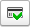

В справочнике хранится информация о дисконтных картах покупателей.
Возможность использовать дисконтные карты определяется флагом "Дисконтные карты" в разделе Настройки - Еще больше возможностей - Продажи - Цены и скидки.
В этой справке:
Настройки дисконтной карты зависят от вида дисконтной карты.
При создании новой дисконтной карты покупателя устанавливается вид дисконтной карты – элемент справочника "Виды дисконтных карт". В зависимости от выбранного вида пользователю будет доступен определенный набор реквизитов.
Когда магнитный код и штрихкод совпадают, то можно воспользоваться кнопками копирования штрихкода в магнитный код и обратно. Кнопки расположены между этими полями.
Наименование дисконтной карты (поле "Наименование") заполняется автоматически, но может быть изменено вручную.
Перейти
к справке "Виды дисконтных карт"
Дисконтные карты могут применяться как в оптовой, так и в розничной торговле.
Возможности применения дисконтных карт отличаются в приложениях "1С:УНФ" и "1С:Розница". Документы, доступные только в приложении "1С:Управление нашей фирмой" (1С:УНФ) отмечены иконкой.
Дисконтные карты можно использовать в следующих документах. Во всех документах порядок действий идентичен.
Дисконтные карты предъявляются покупателем при оплате.
Для считывания дисконтной карты в документе используется кнопка  .
После нажатия указанной кнопки появляется диалог считывания дисконтной карты.
Дисконтная карта считывается с помощью сканера штрихкодов или считывателя
магнитных карт. Тип определяется автоматически. Также код карты можно ввести
вручную. Доступен поиск дисконтной карты по номеру телефона контрагента - владельца карты. Поиск по номеру телефона осуществляется среди контактной информации контрагента. Допустимо не вводить лидирующие 8 или +7.
.
После нажатия указанной кнопки появляется диалог считывания дисконтной карты.
Дисконтная карта считывается с помощью сканера штрихкодов или считывателя
магнитных карт. Тип определяется автоматически. Также код карты можно ввести
вручную. Доступен поиск дисконтной карты по номеру телефона контрагента - владельца карты. Поиск по номеру телефона осуществляется среди контактной информации контрагента. Допустимо не вводить лидирующие 8 или +7.
Если дисконтная карта зарегистрирована, то отобразится пиктограмма  и программа
подставит в документ процент скидки по дисконтной карте, пересчитает суммы в
табличной части и заполнит контрагента по данным о владельце карты.
Дисконтную карту также можно выбрать из общего списка, если нажать на
гиперссылку с информацией о валюте, виде цены и налогообложении.
Если дисконтная карта не зарегистрирована в системе, то после считывания
программа предложит ее зарегистрировать. После регистрации информация о скидке и
владельце также подставится в документ.
По карте лояльности могут быть предоставлены как фиксированные или накопительные скидки.
Процент скидки, который будет автоматически предоставляться покупателю при предъявлении дисконтной карты, устанавливается в виде дисконтной карты. Скидка по дисконтной карте настраивается в справочнике "Виды автоматических скидок, наценок". Для применения скидки по дисконтной карте, условием предоставления скидки должно быть указано "Предъявлена дисконтная карта".
Перейти
к справке "Автоматические скидки"
Если для вида дисконтной карты определена бонусная программа, то при применении такой дисконтной карты в документах появится возможность начисления бонусных баллов и оплаты бонусами.
Перейти
к справке "Бонусные
программы"
Видеоролики: